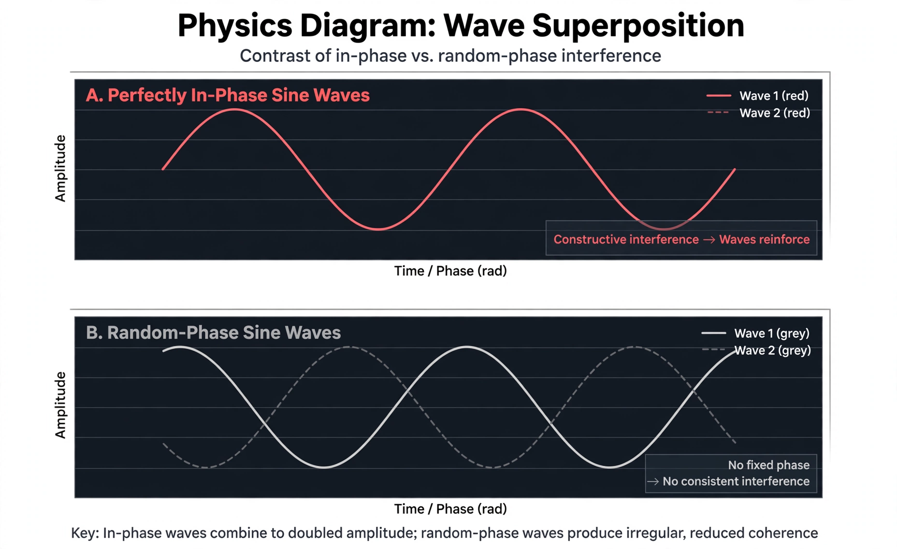

In physics, coherence expresses the potential for two waves to interfere. Two monochromatic point sources are regarded as coherent if they emit waves of the same frequency and waveform, with a constant phase difference. A simplified definition is the correlation of the phase of the wave over time (temporal coherence) or over space (spatial coherence).

Coherence was originally conceived in connection with Thomas Young's double-slit experiment in optics, in which light from a single source was split to demonstrate interference. John Zernike introduced the concept of partial coherence in 1938. Coherence is a property of waves that enables stationary (temporally and spatially constant) interference, and it is the property that allows lasers and holography to function.
Temporal coherence is the measure of the average correlation between the value of a wave and itself delayed by a time τ, at any pair of times. It describes how monochromatic a source is. The coherence time τc is the time over which the phase or amplitude wanders by a significant amount, and the coherence length Lc = cτc is the distance the wave travels in that time. Perfectly monochromatic light has infinite coherence length; real sources such as spectral lamps have coherence lengths of fractions of a millimetre, while stabilised lasers can reach hundreds of kilometres.
Spatial coherence describes the correlation between waves at different points in space, lateral or longitudinal. It determines the visibility of interference fringes when light from an extended source is combined, and it is exploited in stellar interferometry to measure the angular diameters of stars, following the van Cittert–Zernike theorem.
Coherence is central to optical coherence tomography, coherence-domain reflectometry, quantum optics (where coherence is described by density matrices and off-diagonal elements), and atom interferometry.
See also: Coherence length · Degree of coherence · Monochromatic radiation